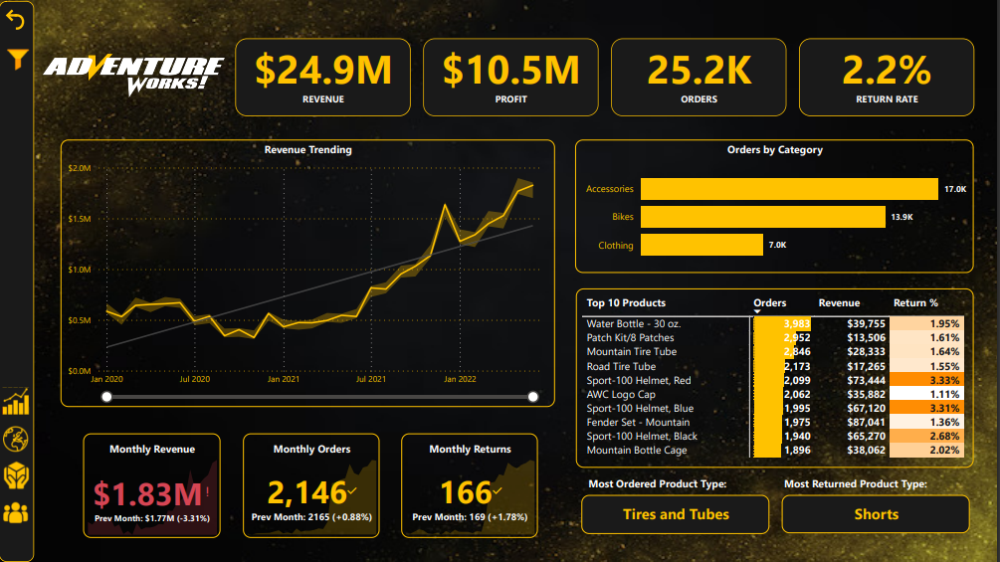
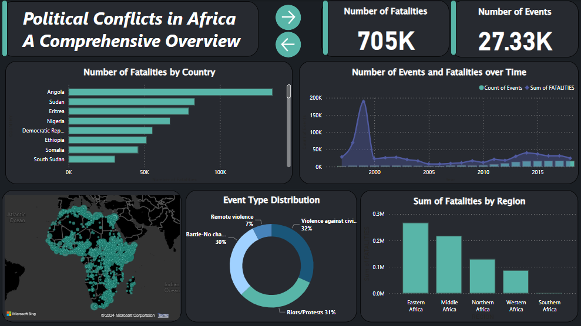

This project aims to predict earthquake damage in Nepal using machine learning models, specifically Logistic Regression and Decision Tree. The dataset includes information about building structures in Nepal, and the models are trained to predict the severity of damage caused by earthquakes.

This dashboard gives you a complete view of how AdventureWorks is doing, covering everything from making money to understanding our customers better. It's like a full-circle look at AdventureWorks' performance!

This Report Uncovers African political landscapes from 1997 to 2018, exploring events, regions, and their impact. A visual journey revealing insights into political conflicts and their lasting effects.
In this project, I conducted an Exploratory Data Analysis (EDA) on the history of the Olympics with a special focus on Egyptian athletes. Using Python, I analyzed a comprehensive dataset to uncover trends, patterns, and significant insights. The project involved data cleaning, visualization, and statistical analysis to explore various aspects.
This project aims to predict the prices of diamonds utilizing various machine learning models. Employing techniques such as one-hot encoding, feature engineering, and advanced ensemble methods, I worked to achieve high prediction accuracy.
This project is focused on the analysis of COVID-19 data using SQL queries. The dataset includes information about COVID-19 deaths, vaccinations, and related statistics across various locations and continents.
In this project we take raw housing data and transform it
in SQL Server to make it more usable for analysis.
This project is a Python-based automated cryptocurrency data analysis tool. It connects to the CoinMarketCap API to retrieve real-time data, performs continuous data collection, and provides dynamic visualizations of cryptocurrency price trends over different time intervals.
Pythagorean expectation is a sports analytics formula which relates the number of runs a team has scored and surrendered to its actual winning percentage, So How accurate is Pythagorean expectation? Let's see!

Tableau Dashboards for projects on Airbnb and Netflix
This project involves web scraping data from Amazon to track the price of a specific product over time.